Verificador, 14/11/2026. Versão testada: a versão de teste de hoje. Livro: uma cópia do Os Lusíadas contados às crianças (o mesmo do teste do Kaique de 06/11). Nenhuma linha do programa foi mudada: aqui só se mostra o erro, a prova e a explicação, como você pediu ("eu quero ver esses erros, as provas dele e uma explicação de como acontece, explique de forma simples. quero antes de dar inicio.").
Ainda acontecem, na versão de teste de hoje (12):
Já não acontece (1):
Nenhum conserto foi começado: cada um espera o seu sim, um por vez.
Fiz o caminho do Kaique na janela de verdade do programa, posta fora da sua tela: abrir o livro, "Rodar o automático..." com Dividir e "A 1ª folha é a capa aberta", Endireitar, Limpar em Preto e branco, Gravuras e fotos (como vêm de fábrica), sem Cortar; depois olhar as páginas com a Mão, deixar uma página em branco, tirar a contracapa repetida do livro, abrir o painel Propriedades, processar, montar para imprimir em A4, abrir o Automático de novo e a janela de salvar. Os cliques foram feitos como se fossem do mouse. Cada prova tem um resumo em cima e faixas com cor: azul = como é hoje; laranja = a mesma coisa com outra opção, para comparar. O que olhar está circulado em vermelho.
Uma coisa que não consegui fazer como o Kaique: a roda do mouse não funciona com a janela fora da tela (na lista do Automático, a lista foi posta no fim pelo programa de teste, como a roda faria). E um erro eu não consegui repetir nem na versão do teste do Kaique: a folha espremida (erro 6), que dependia do tempo.
Do que se trata. É a página 14 do Lusíadas, a pintura dos homens de chapéu com os barcos ao fundo. No PDF, o peito do homem da direita e a cabeça do homem da frente saem com retângulos pretos e brancos duros, como remendos.
O que acontece hoje. Ainda acontece, igual ao teste do Kaique.
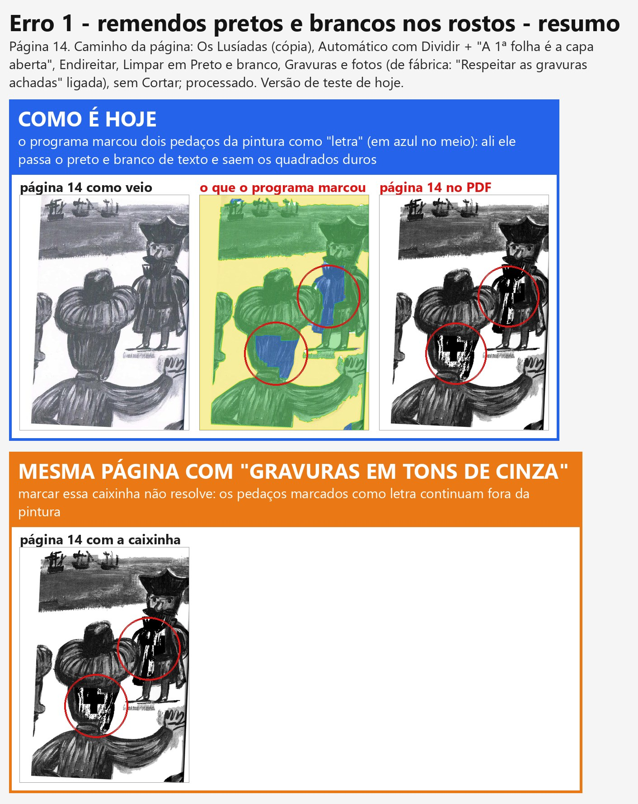
Como acontece. Quando a página está em Preto e branco, o programa primeiro procura o que é pintura e o que é letra. A pintura ele deixa em cinza; a letra ele passa para preto e branco puro. Nesta página ele achou a pintura quase inteira (verde na imagem do meio), mas tomou dois pedaços dela por letra (azul). Nesses dois pedaços a pintura vira preto e branco de texto: são os remendos.
Defeito ou escolha. Defeito do programa: quem marcou "letra" no meio da pintura foi a procura automática. A caixinha "Gravuras em tons de cinza" não resolve (faixa laranja).
De onde veio. Da procura de letra e pintura que o programa faz sozinho, ligada desde o começo de outubro.
Situação. Você escolheu "Consertar" em 09/11. Ainda não começou: espera o seu sim, um erro por vez.
Do que se trata. São dois números: o "página 132 de 134" e o "(134 páginas)" na janela do Automático, e o sino (o triângulo de aviso no alto da coluna da direita, com o número de páginas que pedem um olhar).
O que acontece hoje.
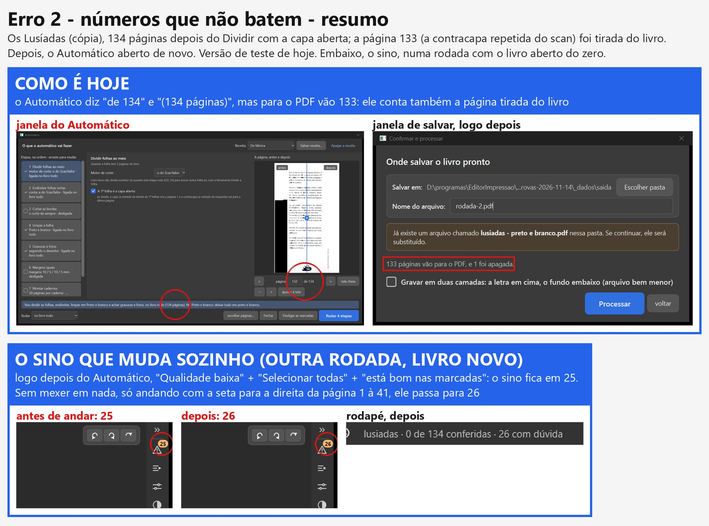
Como acontece (o "de 134"). A página tirada do livro continua na lista do programa, só marcada como "não vai para o PDF" (para dar para trazer de volta). O Automático e a barra de baixo contam a lista inteira; a janela de salvar conta só as que vão para o PDF. Quem escreveu a conta do Automático deixou de propósito ("para a numeração não mudar quando uma página é tirada"), mas não escreveu em lugar nenhum que o número inclui a página tirada.
Como o sino muda sem ninguém mexer. Um dos avisos, "Endireitar: as contas discordam" (o programa tem duas contas para saber quanto a página está torta, e avisa quando elas não concordam), é medido de novo quando a página é desenhada no tamanho do PDF. Esse desenho acontece por trás, sozinho, quando a pessoa passa pela página (ou perto dela). Se a medida nova discorda, o aviso aparece numa página que não o tinha, e o sino sobe; se passa a concordar, o aviso some e o sino desce. Na minha rodada, a página nova com aviso foi a 19 (entre as que eu passei). É o que o Kaique viu (24 → 25 → 28). A mesma medida também roda no processar, por isso o número pode mudar de novo depois de processar.
Defeito ou escolha. Defeito: o mesmo livro tem dois números diferentes, conforme a tela.
Situação. "Consertar" (09/11). Ainda não começou.
Do que se trata. É a tira de miniaturas embaixo da área de trabalho, e o botão "deixar em branco" (no painel Propriedades, em "Esta página"), que põe uma folha branca no lugar da página.
O que acontece hoje. Ainda acontece: a página grande fica branca, a miniatura continua mostrando o título.
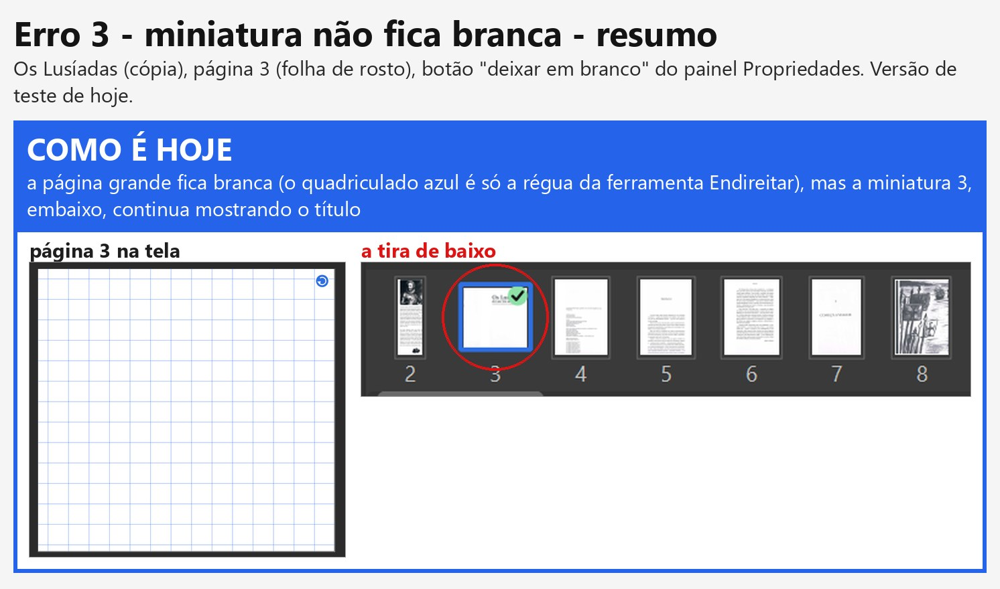
Como acontece. A miniatura mostra a folha como veio do scanner, cortada no lugar da página. Ela só é redesenhada "como sai no PDF" em dois casos: quando a página foi mudada de lugar ou de tamanho, e quando é uma página em branco acrescentada à mão (essa sai branca). A página "deixada em branco" não entrou nessa regra. Na grade "Todas as páginas" acontece o mesmo.
Defeito ou escolha. Defeito. Vai contra o que você pediu em 07/11: "O preview as miniaturas tem que estar sincronizada e o resultado final tem que sair como a edição foi mostrada no preview."
Situação. "Consertar" (09/11). Ainda não começou.
Do que se trata. É a barra do pé da área de trabalho: "página N de M", desfazer, refazer, "Uma página", "Duas lado a lado", "antes / depois", "marcações", zoom.
O que acontece hoje. Ainda acontece na janela do tamanho do notebook do Kaique (1280 x 657) com o painel Propriedades aberto: "uas lado a lad" e "página 133 de 13". Na janela grande, com o mesmo painel aberto, coube inteira nesta rodada.
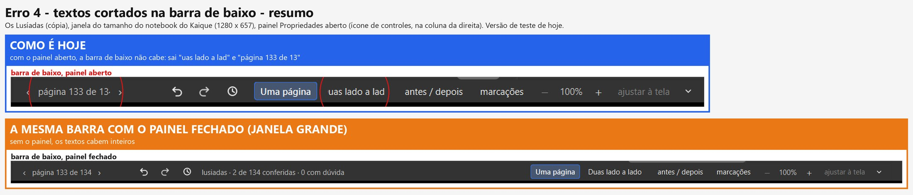
Como acontece. O painel aberto ocupa a direita, e a barra de baixo fica mais estreita. Os botões não sabem encolher nem ir para outra linha: quando falta lugar, o Windows corta o texto do botão.
Defeito ou escolha. Defeito de tela (o que se aperta continua funcionando; o PDF não muda).
Situação. "Consertar" (09/11), no fim da fila, como você disse: "não é urgente".
Do que se trata. É o arquivo que sai de "montar para imprimir em A4" (na tela de "Ficou pronto!"), com o Livreto de fábrica: duas páginas de cada lado de uma folha A4 deitada.
O que acontece hoje. Ainda acontece. Nesta rodada foi a página 3 (a folha de rosto), que saiu deitada na face 3. Na folha 7, a do Kaique, o corte caiu de novo no meio do título "PERIGOS E TRAIÇÕES".
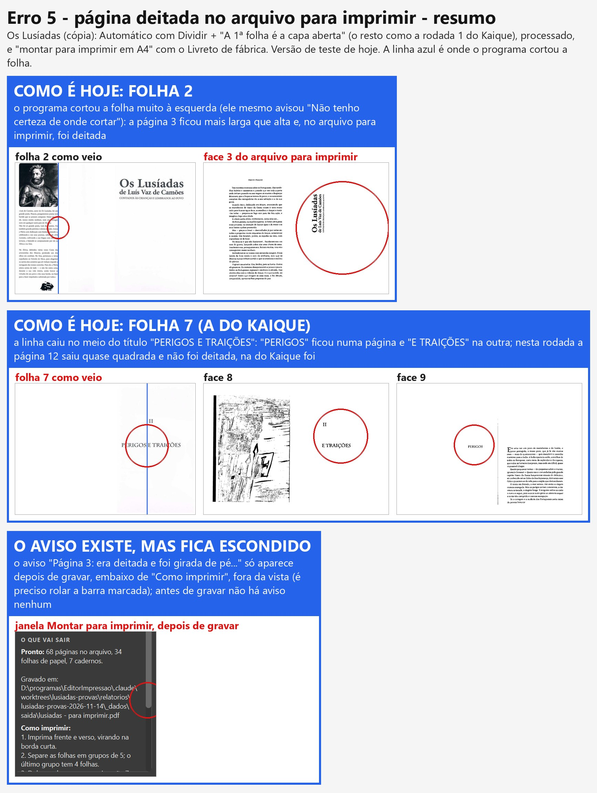
Como acontece. São duas coisas em fila.
Defeito ou escolha. As duas coisas. O corte errado é defeito do Dividir, mas ele avisou, e o Kaique (como no teste) disse "continuar assim mesmo". O giro escondido é defeito: o aviso existe e ninguém vê.
De onde veio. O girar sozinho e o aviso são do "montar para imprimir" (22/10); o aviso nasceu do seu pedido de 20/10 ("Quero que o programa avise quando isso estiver acontecendo"), mas ficou só depois de gravar. A sua pergunta de 09/11 já foi respondida na Central: dá para arrastar a linha só naquela folha, e o resto fica como o Automático fez.
Situação. "Consertar" (09/11). Ainda não começou.
Do que se trata. Logo depois de dividir o livro no Automático, com a ferramenta Mão escolhida e a vista "Uma página", a página aparecia com a folha inteira (as duas páginas) apertada na largura de uma.
O que acontece hoje. Já não acontece. Na versão de teste de hoje, pelo mesmo caminho, as páginas 1, 2, 5, 8 e 14 aparecem certas com a Mão e "Uma página".
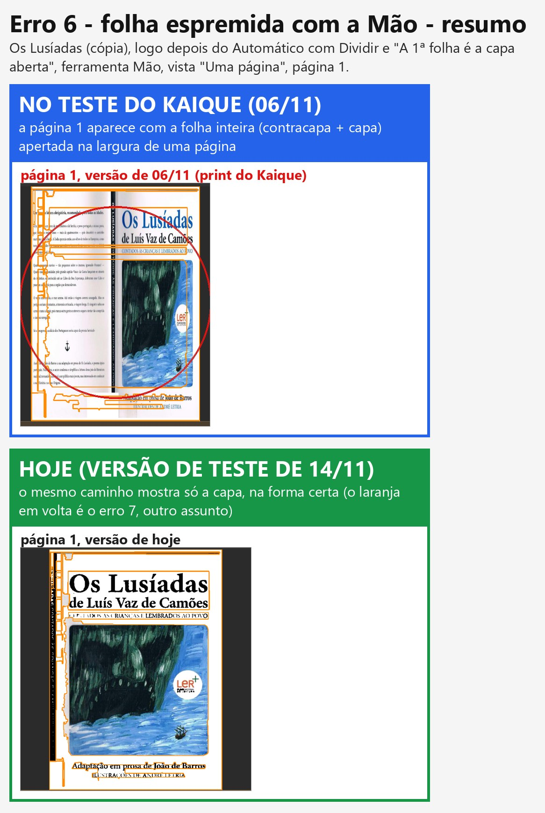
Como acontecia. Era um desenho errado que a tela mostrava enquanto o desenho certo não chegava: o programa entregava, por um caminho, a folha inteira como veio do scanner no lugar da página já dividida, e a tela a esticava para a forma de uma página. Isso foi consertado em 09/11, no conserto do Preto e branco escolhido à mão (a mesma causa fazia o PDF sair sem o título na página 5, que você testou em 13/11: "funcionando"). Há duas provas automáticas que guardam isso e as duas passam hoje.
Ressalva. Rodei o mesmo caminho também na versão do teste do Kaique (06/11) e lá também não apareceu: o defeito dependia de quanto o desenho demorava. Por isso a prova do "antes" é o print do próprio Kaique. Ainda há um ponto fraco: a tela continua esticando, sem avisar, qualquer imagem que chegue com outra forma; se outro caminho entregar a imagem errada, o espremido volta. Fica anotado na parte da gerente.
Defeito ou escolha. Defeito de tela (o PDF saía certo).
Situação. Consertado na versão de teste em 09/11. Falta você conferir pelo caminho do Kaique (dividir no Automático, Mão, "Uma página").
Do que se trata. A Mão é a última ferramenta da coluna da esquerda (o desenho de uma mãozinha, logo abaixo da lupa). Ela serve só para olhar a página e arrastá-la quando está ampliada; não muda nada. Os contornos laranja são o programa mostrando onde ele achou letra e pintura.
O que acontece hoje. Ainda acontece: com a Mão escolhida e o botão "marcações" desligado, os contornos laranja continuam em volta do texto e da pintura.
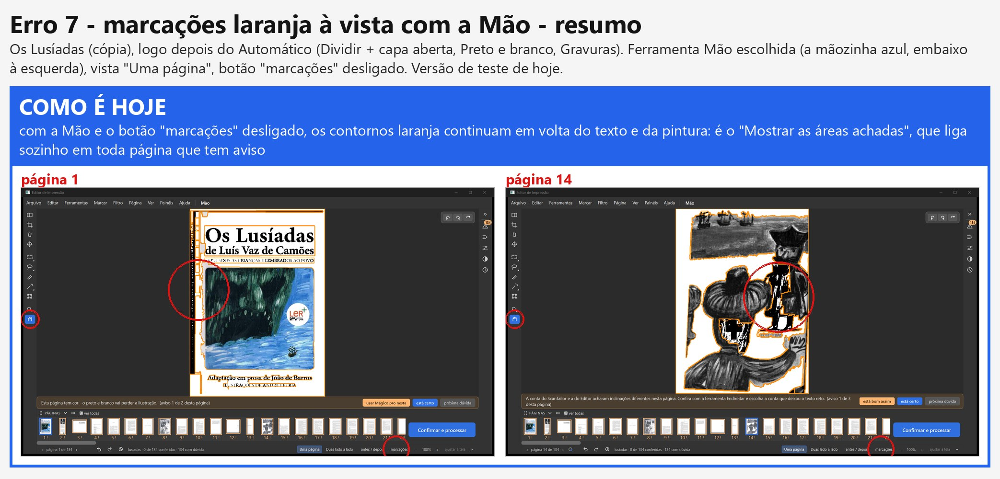
Como acontece. Existem duas coisas diferentes na tela, e elas seguem regras diferentes:
Defeito ou escolha. As duas regras foram pedidas por você, e elas se cruzam. Não é um defeito de conta: falta dizer qual vale quando as duas batem.
O que você escolhe.
Situação. "Consertar" (09/11), mas precisa desta escolha antes.
Do que se trata. É a janela "Onde salvar o livro pronto", que abre ao clicar em "Confirmar e processar". Quando já existe um PDF com o mesmo nome na pasta, aparece a faixa "Já existe um arquivo chamado ... Se continuar, ele será substituído."
O que acontece hoje. Ainda acontece: troquei o nome para "rodada-2.pdf" (que não existe) e a faixa continuou dizendo que o outro arquivo seria substituído. Nada é apagado: o programa só substitui o arquivo que tem o nome escrito, e pergunta antes.
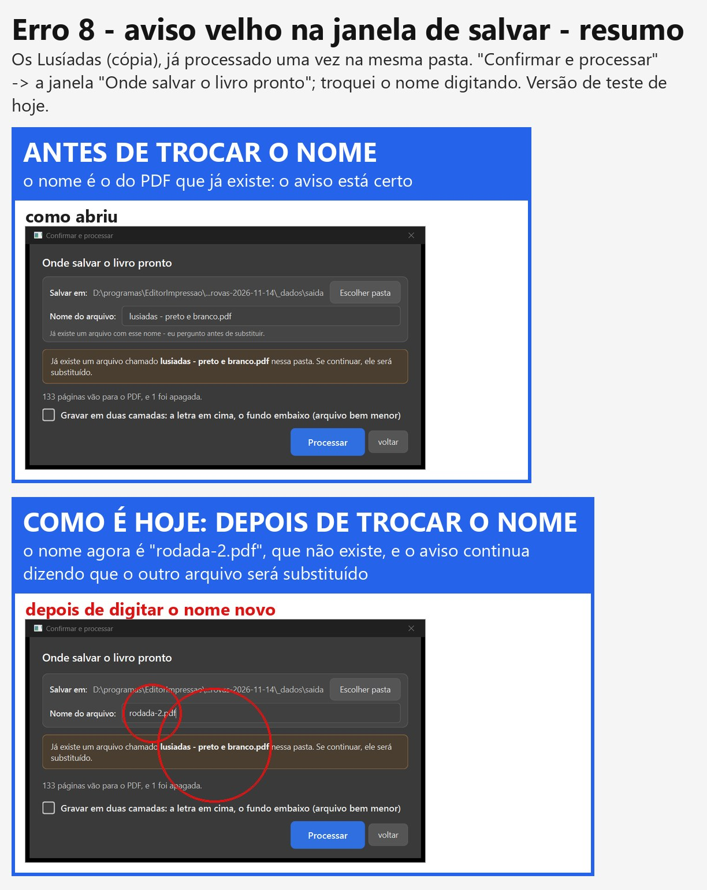
Como acontece. A janela confere o nome em dois lugares. Um aviso pequeno, embaixo do nome, é refeito a cada letra digitada. A faixa grande só é refeita quando se troca a pasta, nunca quando se troca o nome. Por isso ela fica falando do nome velho.
Sua pergunta: "porque aconteceu esse bugue, que regra o agente errou".
Situação. "Consertar" (09/11). Ainda não começou.
Do que se trata. A faixa é a tarja logo acima da tira de miniaturas, com uma frase e os botões "está certo" e "próxima dúvida".
Sua pergunta: "para que serve, e em que situação é disparado?" A faixa sempre diz uma frase sobre a página da vez:
O que acontece hoje. Ainda acontece: a miniatura diz "apagada", e a faixa diz "Esta página vai sair em Preto e branco." Com o Endireitar escolhido, ela diz "Vou endireitar sozinho...", também errado.
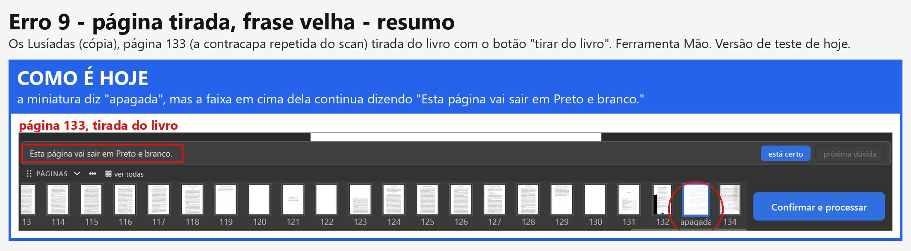
Como acontece. A frase da faixa tem um caso para a página "deixada em branco", mas não tem para a página "tirada do livro". Quando os dois botões foram postos em toda página (26/10), só um ganhou frase.
Defeito ou escolha. Defeito.
Situação. "Consertar" (09/11). Ainda não começou.
Do que se trata. Na janela do Automático, na etapa "1 Dividir folhas ao meio", embaixo de "Motor de corte", está escrito "Livro novo não divide sozinho: só quando esta etapa roda (G2)".
O que acontece hoje. Ainda acontece.
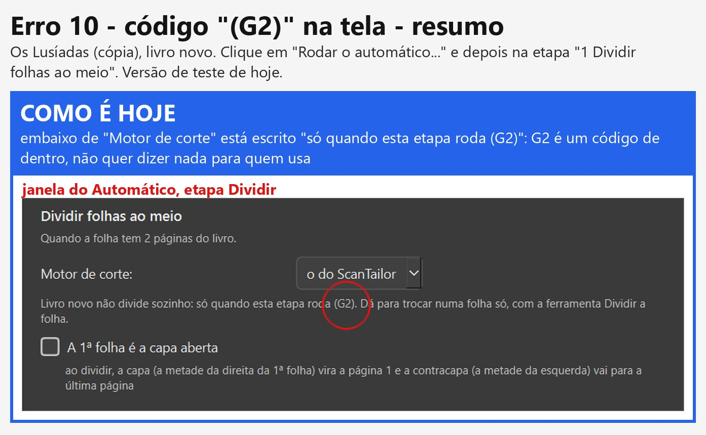
Como acontece. "G2" é o nome que a sua pergunta tinha numa conferência antiga (05/10). Quem escreveu o texto da tela copiou o código junto.
Onde mais tem código na tela. Procurei em todos os textos do programa. Além do "(G2)", há dois em balões (o texto que aparece quando o mouse para em cima):
Defeito ou escolha. Defeito: contra a sua regra "Não se deve usar código na nomeação de coisas". Os três entraram juntos em 26/10, na obra.
Situação. "Consertar" (09/11). Ainda não começou.
Do que se trata. É a lista "Etapas, na ordem" da janela grande do Automático (1 Dividir ... 7 Montar cadernos), com uma caixinha em cada etapa.
O que acontece hoje. Ainda acontece quando a lista não cabe na janela (no tamanho do notebook do Kaique): rolei até o fim, marquei "6 Margens iguais", e a lista pulou para o topo. O mesmo com "7 Montar cadernos".
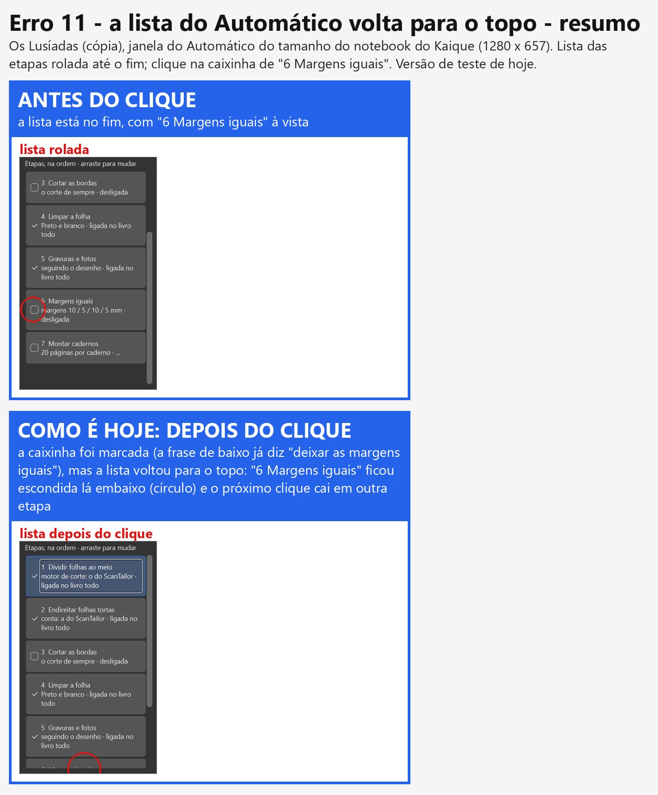
Como acontece. Cada vez que qualquer coisa muda no Automático (uma caixinha, uma opção), a lista é apagada e montada de novo, do começo. Montada de novo, ela volta para o alto. O clique seguinte cai na etapa que estiver naquele lugar (no teste do Kaique, "Cortar as bordas").
Defeito ou escolha. Defeito. Acontece também no painel Automático da direita, que usa a mesma lista.
Situação. "Consertar" (09/11). Ainda não começou. A sua ideia da ferramenta que descreve tudo sem precisar de foto foi para a Lista de espera.
Do que se trata. É a página 22, o verso de uma folha que não tem nada impresso; só se vê, bem fraquinho, o texto da outra face por transparência. No PDF ela sai com tracinhos pretos pela página toda e um bloco preto embaixo.
O que acontece hoje. Ainda acontece.
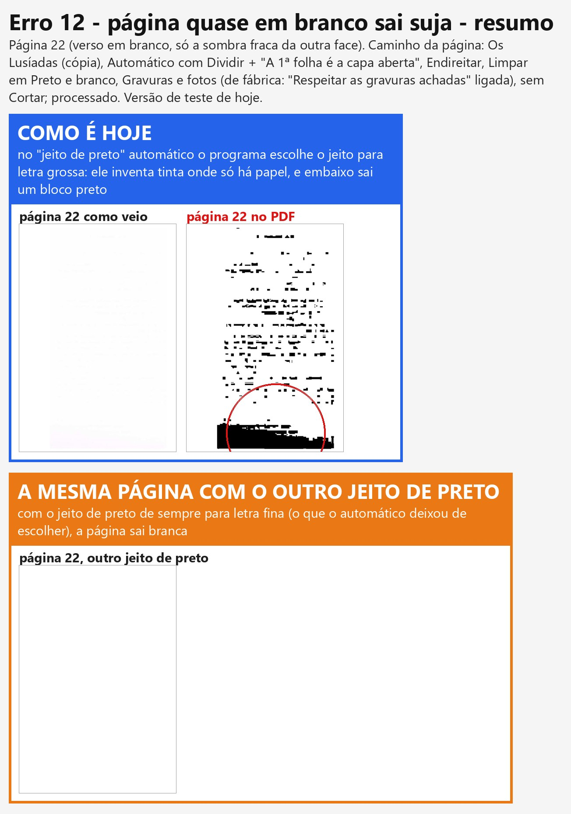
Sua pergunta: defeito ou escolha das ferramentas? As duas coisas, mas o principal é defeito.
De onde veio. A escolha sozinha do jeito de preto é antiga (setembro, antes do plano de 24/09); o jeito de letra grossa existe por causa das letras góticas pesadas (Graduale, Palatino).
Situação. Você pediu "investigar antes" (09/11). Investigado: é defeito. O conserto espera o seu sim.
Do que se trata. É a página 8, a pintura das bandeiras e dos navios. No PDF quase tudo vira branco, com riscos soltos.
O que acontece hoje. Ainda acontece.
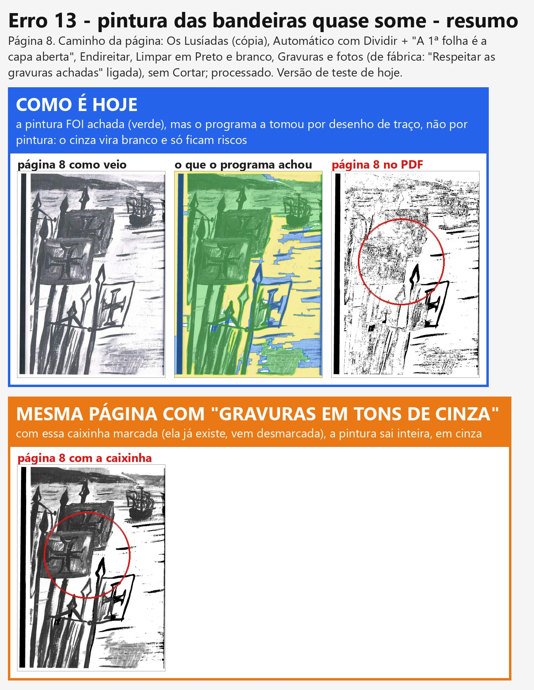
Suas perguntas.
De onde veio. É da mesma família do defeito que você aceitou deixar para depois em 29/10 (pintura confundida com enfeite no Na escola de Jesus). A sua ideia de 09/11 (o aviso com as marcações para aumentar, diminuir ou trocar o filtro só naquele pedaço) foi para a Lista de espera, na Fase 3.
O que você escolhe (para quando o conserto começar).
Situação. Investigado: defeito. O conserto espera o seu sim.
Versão lida e rodada: obra-2026-10-26 em c7e34fd8 (cópia lusiadas-provas). Teste de máquina = log e medidas do
piloto (scripts/anotacoes-*.txt, scripts/analise*.json); teste de olho = os prints abertos um por um.
LETRA de origem rede (o modelo de regiões, core/rede_selecao.py
/ core/detectar_regioes.py) dentro da pintura: peito do homem da direita e nuca/rosto do da frente
(prints/analise/p14-2-marcado.jpg). Em core/filtros.aplicar_filtro_com_selecao → _preto_e_branco_com_gravura, a
pintura vira cinza só onde peso_gravura > 0; o resto recebe a binaria da página inteira. As regiões de letra
ficam fora da zona de gravura → retângulos em 1 bit no meio do cinza._filtrar_com_a_marcacao é o ponto único). "Gravuras em tons de cinza" NÃO resolve
(prints/analise/p14-5-com-gravuras-em-cinza.png): a regra continua "letra fora da gravura". "Só as letras" não
testado aqui.garantir_selecao ou a união das regiões da máquina), letra achada pela rede
que fica cercada por gravura e não tem forma de linha de texto passa a contar como gravura.ui/automatico.py — EstadoDoAutomatico.do_projeto (self.total_paginas = len(projeto.paginas), ~l.322 e
l.343) alimenta A.resumo(...) ("no livro todo (N páginas)"); PaginaAntesEDepois._numero_e_total (~l.1840) devolve
len(self.projeto.paginas) sem o Dividir, e len(passos) com ele (os passos também incluem a tirada: print b-10 "132
de 134"; c-03 mostra a 133 tirada como "página 133 de 134"). O comentário logo acima diz que é de propósito
("contar pelos passos sem o Dividir (página tirada do livro mudaria a numeração de sempre)"). A barra de baixo
(rotulo_da_pagina: "página 133 de 134") conta igual; a JanelaConfirmar._frase_do_livro conta paginas_ativas
(133). Três telas, duas contas.scripts/sino.py: desenhar as 133 páginas no tamanho do PDF (renderizar_pagina) numa cópia do projeto
não criou nenhum aviso pendente novo (scripts/sino.json; ali nenhum aviso C1 "nasceu" porque todos já estavam aceitos). Fase d (livro do zero, _dados-d, scripts/anotacoes-d.txt): logo depois do Automático, "Qualidade baixa" (67) + todas + "está bom" -> 134 para 25 (igual ao Kaique); parado 120 s: 25; 10 setas: 25; 20 setas: 26; 40 setas: 26. Avisos pendentes no fim (scripts/sino_d.json): nas páginas 11 a 21, só a 14 (contas discordam + ângulo diferente, já existiam na fase a) e a 19 (contas discordam): a 19 é a nova. Causa: core/pipeline (~l.1551) _anotar_contas_discordam(pagina, bool(medidas.get("discordam"))) roda a cada medida da geometria no tamanho do PDF (prévia por trás, medida do "Para revisar", processar) e põe ou tira o aviso C1 (e põe a página como não conferida). Caminhos que acrescentam avisos depois de
abrir: ui/tela_conferir._alertas_da_previa (prévia e medida do "Para revisar" que chegam por trás), a medida por
trás ao abrir (D-284) e _medir_o_em_branco_por_tras (ui/tarefas.py); o cartão da tela inicial lê o
resumo.json gravado num momento anterior (por isso 27 × 25).Projeto.paginas_ativas),
usada no Automático, na barra de baixo e na janela de salvar; se a tirada continuar numerada, dizer na tela
("134, 1 fora do livro").ui/tela_conferir._acertar_as_miniaturas_movidas só troca a miniatura em dois casos: inserida (D-623,
_miniatura_branca) e _pagina_sai_movida (D-547/D-649). em_branco não entra; a tira fica com a folha crua.
A grade "Todas as páginas" (_pagina_dentro_da_folha → miniatura_como_sai) tem a mesma falta.inserida e
em_branco). core/pipeline._filtrar já trata as duas juntas (em_branco or inserida); a tela não._filtrar) usada pela tira e pela grade.ui/tela_conferir.py, montagem ~l.1200-1250: botoes_mostrar, "antes / depois", "marcações",
zoom, qualidade) é um QHBoxLayout sem regra de encolher/quebrar; com o painel da direita aberto a 1280 × 657 o
espaço fica menor que a soma dos botões e o Qt corta o texto. Nesta rodada a janela grande (1582 lógicos) coube.core/dividir_scantailor / motor "o do ScanTailor") pôs a linha fora do meio
nas folhas sem lombada visível (folha 2 em 0,239; folha 7 em 0,732, ambas com lombada_incerta, confianca_corte
1,0 gravada mesmo assim); a página que sobra fica mais larga que alta. (2) core/impressao._gira gira 90° toda
página "deitada" (largura > 1,02 × altura) numa vaga em pé (rotacao_automatica=True de fábrica). O aviso
_avisos_de_giro existe, mas ui/dialogo_impressao._terminou só o mostra depois de gravar, no fim da coluna da
direita, abaixo de "Como imprimir" (fora da vista; prints/crus/a-21).montar_para_impressao).pixmap_editor na forma da página) nem na versão
51bdcb0b (cópia teste-kaique-lusiadas, mesma rota; _dados/saida-mao.txt, prints mao-*). Depende de tempo.relatorios/graves-2026-11-10/ONDE-PAREI.md): a folha crua devolvida como
"imagem do PDF" pela procura da gravura por trás, esticada pela tela (ui/tarefas.GerenciadorPrevias.
_por_a_imagem_do_pdf, cv2.resize). Consertada na origem em 88731637 (09/11), depois da versão do Kaique.
Provas tests/test_decisoes_gravura_a_mao.py::test_d659_a_tela_nao_troca_a_previa_pela_folha_crua e
tests/test_graves_d649_miniatura_igual_ao_pdf.py::test_d649_a_o_mover_mostra_a_pagina_e_nao_a_folha_espremida:
rodei as duas hoje, passam (2 passed). A prova de que a primeira falha no código antigo é do agente graves, não
refeita por mim.cv2.resize calado em _por_a_imagem_do_pdf (achado 1 do agente graves): qualquer
outro caminho que entregue imagem de outra forma vira "folha espremida" em vez de erro visível.ui/tela_conferir._mostrar_as_achadas liga editor_selecao.mostrar_achadas quando
pagina.precisa_revisao (D-237, 08/10: "no para revisar, elas já vão aparecer laranjas"), qualquer que seja a
ferramenta. O botão "marcações" (D-580/D-584) só controla mostrar_marcacao (as cores); o paintEvent de
ui/widgets/editor_selecao.py pinta o laranja das achadas sempre, de propósito (docstring: "Arriscado: pôr o
_pintar_achadas_e_escolhida de volta dentro do if"). Depois do Automático quase toda página tem aviso → laranja em
quase todas. São duas decisões que se cruzam: precisa da escolha do Samuel.ui/widgets/destino.py: campo_nome.textEdited → só _conferir() (o aviso pequeno do seletor); o sinal
alterado só é emitido em escolher_pasta. ui/janela_confirmar.JanelaConfirmar liga destino.alterado a
_reavaliar, que é quem mostra/esconde aviso_existe. Trocar o nome nunca chama _reavaliar.alterado de c3840ebd (18/07, "Escolher onde salvar..."); a faixa aviso_existe e a
ligação só ao alterado de 765a56f3 (08/08, "Secao 2, etapa 1 - barra de menu, e o destino sai da tela de
trabalho", autor Claude); a docstring falsa "Chamado toda vez que o destino muda (sinal alterado)" de c8ae8b6a
(25/09, "Comentarios explicativos no codigo"). O pedido: Pedido 5 de 18/07 ("avisar se já existir arquivo com o
mesmo nome, oferecendo substituir ou renomear"; historico/arquivo-morto/...68 pedidos).md l.68).tests/test_barra_de_menu.py::test_a_janela_de_confirmar_avisa_que_vai_substituir
chama janela.destino.definir(...) e depois janela._reavaliar() à mão; nenhum teste digita no campo.JanelaPrincipal._perguntar_sobre_substituir continua protegendo o arquivo. O menu Arquivo > "Nome do arquivo..."
não usa este seletor.alterado também quando o nome muda (um sinal só para "o destino mudou"),
e a prova digita no campo.ui/tela_conferir._atualizar_faixa tem ramo para em_branco e para a conferida, não para apagada; cai
em _texto_tranquilo(aba) ("Esta página vai sair em {filtro}" na Mão/marcar/Filtro/Mover; "Vou endireitar
sozinho..." no Endireitar; "Vou cortar a borda sozinho..." no Cortar). _conferida_na_faixa já exclui apagada,
e _atualizar_os_botoes_da_pagina já troca o botão para "trazer de volta": só a frase ficou.d9fae8c2 (18/07); "tirar do livro" em toda página é de 82cdadae (26/10,
etapa 2 da obra), sem tocar a faixa.apagada: o
_texto_tranquilo do Dividir também não olha).apagada em _atualizar_faixa (antes do texto da ferramenta), com o botão "trazer
de volta", como o do em_branco.Busca em todos os textos de ui/ (scripts/codigos_na_tela.py → scripts/codigos_na_tela.txt; strings que não são
docstring nem comentário):
ui/automatico.py:2285 — texto à vista na etapa Dividir: "só quando esta etapa roda (G2)".ui/automatico.py:765-767 — balão do botão "desligar as marcadas": "(D-068: toda função automática liga e
desliga)".ui/automatico.py:2304-2305 — balão da lista "Quando o ângulo muda depois do corte à mão, o corte:": "D-094: a
mesma escolha existe nas Configurações...".ui/tela_inicio.py:183, é a tecla) e "A4" (tamanho de papel). Em core/, os textos
com "item 2.11", "item 2.12", "item 1.2", "item 2.2", "item 2.8" vão só para o erros.log, não para a tela.e2321b16 (26/10, "Etapa 3: ... painel Automático e janela grande de verdade").tests/test_decisoes*.py uma prova que varre os textos de ui/ com o
mesmo padrão (pedido da própria D-687).ui/automatico.ListaDeEtapas.refazer (ligado a estado.mudou) faz clear() e recria todos os itens a
cada mudança; o QListWidget volta a barra para 0. Medido: barra 2 → 0 ao marcar "6 Margens iguais" e "7 Montar
cadernos" na janela a 1280 × 657.refazer, atualizar texto e caixinha dos itens que já existem (ou guardar e devolver a
posição da barra), recriando só quando a ordem muda.algoritmo_preto_branco = "auto" →
core/filtros.escolher_algoritmo_automatico limiariza a página com Otsu e mede a "espessura do traço" dessas manchas
de papel; dá traço grosso → escolhe Otsu. Otsu numa página sem tinta separa dois tons de papel: 10,7% de preto.
Sauvola na mesma página: 0,0%; Wolf: 6,6% (scripts/analise.json, prints/analise/p22-pb-*.png). Não há
verificação de contraste mínimo antes de escolher.em_branco acerta, mas não muda nada sozinho.escolher_algoritmo_automatico, página sem contraste de tinta (ex.: diferença entre os
percentis claros e escuros menor que um limite) fica no Sauvola; a mesma regra serve a prévia e o PDF (já é uma
função só).rede). _tipos_das_zonas classificou a zona
única como "desenho" (nem foto/pintura, nem enfeite) → _desenho_em_preto_e_branco (traço em 1 bit): o cinza
claro vai a branco. Além disso, partes do céu e do mar claros foram marcadas PAPEL (amarelo em
p8-2-marcado.jpg) → branco. Com gravuras_em_tons_de_cinza=True (D-588) a página sai inteira em cinza
(p8-5-com-gravuras-em-cinza.png). Mesma família da D-585 (pintura confundida com enfeite, aceita até depois)._tipos_das_zonas (regra de imagem, precisa medida e teste em mais livros), ou o aviso da página leva a
"Gravuras em tons de cinza".O 1º processar da fase a gravou C:/Users/fotog/Documents/Editor de Impressao/lusiadas - preto e branco.pdf
(18,7 MB, 14/11 13:07): com uma pasta de dados nova, a pasta de saída sugerida é Documentos. Nada dele foi substituído
(a pasta só tinha três PDFs do Gradus de 18/07). Não apaguei. A gerente pergunta ao Samuel se pode apagar.
Editor de Impressão · gerado em 14/11/2026 às 13:32